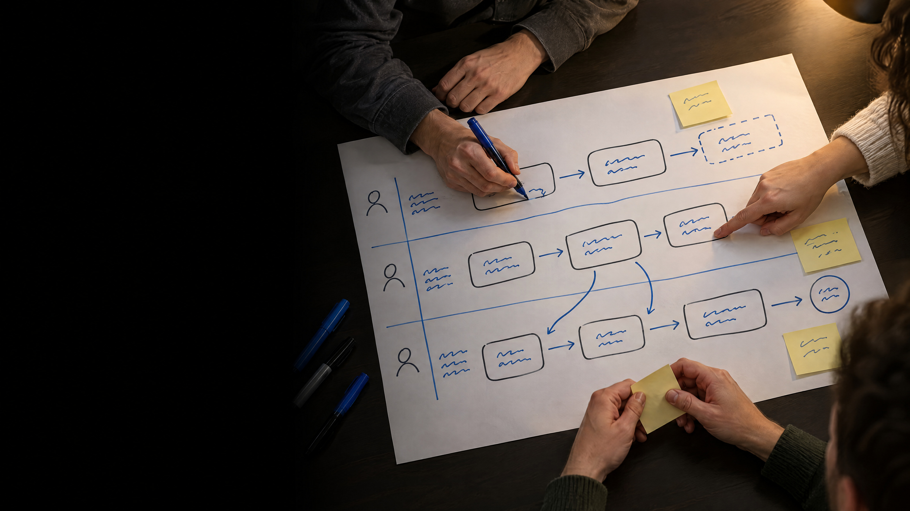

Pinnwand · Plakat 2
Wofür nutzt ihr KI vor allem?
Pinnwand · Plakat 3
Welcher Begriff im Umfeld von KI ist für euch am unklarsten?
Pinnwand · Plakat 4
KI im Berufsalltag ist für mich …
Pinnwand · Kartenwand
Was wollt ihr heute mitnehmen?
Die Manny Molk GmbHist eine erfundene Molkerei. Alle Fälle des Tages spielen dort.
Block 1
Was ist eigentlich
eine Entscheidung?
Warum eine gute Prognose noch keine gute Entscheidung ist.
Eine Entscheidung ist eine Auswahl
Eine Entscheidung wählt eine von mehreren möglichen Handlungen.
Entscheidungen brauchen ein Ziel
Ohne Ziel lässt sich keine Alternative sinnvoll bewerten.
Entscheidungen brauchen Alternativen
Was ist eine Prognose?
Eine Prognose schätzt, was wir noch nicht wissen.
Das Modell schätzt: 20 % Wahrscheinlichkeit für einen Qualitätsmangel.
Was ist Bewertung?
Ein möglicher Gesundheitsschaden wiegt schwerer als zusätzliche Lagerkosten.
Was ist die Entscheidung?
Die Charge wird bis zur Wiederholungsmessung gesperrt.
Prognose ≠ Bewertung ≠ Entscheidung
Die Anatomie einer Entscheidung
Sicherheit, Risiko, Ungewissheit
Die 20 % aus dem Joghurtfall sind eine Risikoangabe: Der Ausgang ist offen, aber eine Wahrscheinlichkeit lässt sich schätzen.
Gute Entscheidung oder gutes Ergebnis?
Ein gutes Ergebnis beweist keinen guten Entscheidungsprozess.
Outcome Bias
Das spätere Ergebnis färbt das Urteil über die frühere Entscheidung.
Was ist eine Heuristik?
Eine Heuristik ist eine vereinfachende Urteilsregel.
Was ist ein Bias?
Ein Bias verschiebt das Urteil immer wieder in dieselbe Richtung, meist ohne dass wir es merken.
Was ist Noise?
Dieselbe Charge, unterschiedliche Urteile.
Heuristik, Bias und Noise
| Begriff | Bedeutung | Einordnung |
|---|
| Heuristik | Vereinfachende Regel | Kann nützlich sein |
| Bias | Systematische Verzerrung | Problematisch |
| Noise | Unerwünschte Streuung | Problematisch |
Was steckt dahinter?Jetzt seid ihr dran: Ihr ordnet Situationen den passenden Begriffen zu.
Was steckt dahinter?
Welcher Denkweg steckt hinter der Situation?
01
AuslegenDie zehn Situationen offen nebeneinander, die zwölf Begriffe daneben.
02
ZuordnenZu jeder Situation den Begriff, der den Denkweg trifft, mit einer Stelle im Text als Begründung.
03
Übrig lassenZwei Begriffe bleiben übrig: Warum passen sie nirgends?
10 Situationen · 12 Begriffe · alle Karten offen
Was steckt dahinter? Was habt ihr wiedererkannt?
Welches Beispiel kam euch bekannt vor?Eine Situation aus Studium, Alltag oder Betrieb.
Wann hilft eine einfache Strategie?Was erleichtert sie, und worauf würdet ihr achten?
Heuristiken können helfen. Ihre Wirkung hängt von der Situation ab.
Kerngedanke von Block 1
Entscheidungen sind mehr als Prognosen.
Sie verbinden Information mit Zielen,
Bewertung, Handlungswahl und Verantwortung.
Weiterlesen: Wie Menschen entscheiden
Block 2
Was kann KI
eigentlich?
Von festen Regeln zu generativen Modellen.
Was meinen wir mit KI?
Systemperspektive · OECD
Ein KI-System verarbeitet Eingaben und leitet daraus für bestimmte Ziele Prognosen, Inhalte, Empfehlungen oder Entscheidungen ab.
Knappe Paraphrase nach OECD (2024)
Forschungsperspektive · Elaine Rich
KI untersucht, wie wir Computer Dinge tun lassen, die Menschen im Moment besser können.
Eigene Übersetzung nach Rich (1983)
Eine beschreibt das System. Die andere zeigt eine zeitabhängige Forschungsaufgabe.
KI ist ein Oberbegriff
„KI“ bezeichnet keine einzelne Technologie.
Explizite Regeln
Machine Learning
Generative Modelle
Sprachmodelle
Wie funktioniert das konkrete System?
Regelbasierte Systeme
Menschen legen die Entscheidungslogik ausdrücklich fest.
Wenn der gesetzliche Grenzwert überschritten ist, wird die Charge gesperrt.
Wann Regeln gut funktionieren
Klare Bedingungen machen Regeln nachvollziehbar und gut kontrollierbar.
Machine Learning
Ein Modell lernt statistische Zusammenhänge aus Beispieldaten.
Beispiel: Absatzprognose aus historischen Verkaufsdaten.
Machine Learning hängt von Daten ab
Qualität
Messfehler verändern das Lernsignal.
Abdeckung
Fehlende Fälle bleiben schwer einschätzbar.
Aktualität
Alte Muster passen nicht immer zu neuen Lagen.
Daten prägen das Modellverhalten; gute Daten garantieren keine richtige Prognose.
Generative KI
Generative Modelle erzeugen neue Inhalte aus gelernten Mustern und aktuellem Kontext.
Eine erzeugte Ausgabe ist ein Entwurf, noch kein überprüftes Ergebnis.
Foundation Models
Ein breit trainiertes Basismodell kann für viele Aufgaben genutzt oder angepasst werden.
Regeln, Lernen und Generieren
| Prinzip | Grundidee | Beispiel |
|---|
| Regelbasiert | Logik wird vorgegeben | Grenzwertregel |
| Machine Learning | Zusammenhänge werden gelernt | Nachfrageprognose |
| Generativ | Neue Inhalte werden erzeugt | Berichtsentwurf |
Reale Anwendungen können mehrere Prinzipien kombinieren.
Was ist ein Large Language Model?
Ein großes, datengetriebenes Modell für Sprachverarbeitung und Spracherzeugung.
Das Modell wurde anhand vieler Beispiele trainiert.
Sprache wird in Tokens verarbeitet
Das Modell verarbeitet eine Folge kleiner Einheiten.
Die Charge, bitte prüfen.
↓
Die␠Charge,␠bitte␠prüfen.
␠ = Leerzeichen
Der Kontext ist der aktuelle Arbeitsraum
Eine Antwort entsteht aus dem Kontext, der beim aktuellen Aufruf vorliegt.
Das nächste Token
Das Modell berechnet Wahrscheinlichkeiten für mögliche Fortsetzungen.
Text entsteht Schritt für Schritt
Nach jedem erzeugten Token wird die Folge erweitert und der Prozess wiederholt.
Gleiche Eingabe, unterschiedliche Antworten?
Je nach Auswahlverfahren sind verschiedene Fortsetzungen möglich.
Sampling kann Variation erzeugen.
Attention verbindet Stellen im Kontext
Transformer modellieren Beziehungen zwischen Positionen einer Eingabe.
Pretraining
Das Modell lernt statistische Muster aus großen Datenmengen.
Pretraining: Größenordnung der Textmenge
Mensch und Sprachmodelle: verarbeitete Sprachmenge
≈ 200×GPT-3 gegenüber Mensch · grob
Trainingstokens / geschätzte Tokenäquivalente · logarithmische Skala
0,1 Mrd.1 Mrd.
10 Mrd.100 Mrd.
1 Bio.10 Bio.
100 Bio.
MenschHören + Lesen bis 60 J.
≈ 1,5 Mrd. Tokenäquivalente*
GPT-3Modell von 2020
300 Mrd. Tokens
Qwen3Modellfamilie von 2025
≈ 36 Bio. Tokens
* Mensch: geschätzte 1,15 Mrd. englische Wörter bis 60 J. ≈ 1,5 Mrd. Tokenäquivalente (grobe Umrechnung).
Tokenisierer unterscheiden sich. Der Vergleich zeigt Größenordnungen, nicht Lernweise oder Qualität.
Quellen: Wingfield & Connell (2022) · Brown et al. (2020) · Qwen-Team (2025) · OpenAI Token Guide
Welche Daten nutzen ChatGPT-Modelle?
OpenAI nennt drei Hauptquellen für die Entwicklung seiner Modelle.
01Öffentlich zugängliche
Inhalte
02Daten aus
Partnerschaften
03Beiträge von Nutzenden,
Trainern und Forschenden
Instruction Tuning
Beispielantworten helfen dem Modell, Anweisungen besser zu befolgen.
Präferenz- und Feedback-Training
Bewertete Antworten liefern ein weiteres Trainingssignal.
Vom Basismodell zum Assistenten
Post-Training verbessert die Nutzbarkeit, garantiert aber keine Fehlerfreiheit.
Stärke: Sprache strukturieren
Ein LLM kann unstrukturierte Sprache in eine prüfbare Form bringen.
Die Felder müssen bei wichtigen Fällen fachlich kontrolliert werden.
Stärke: Informationen verdichten
Ein LLM kann mehrere Texte zu einer kurzen Übersicht zusammenführen.
Für Entscheidungen bleiben die Originalquellen wichtig.
Stärke: Optionen erzeugen
Ein LLM kann Alternativen, Hypothesen und Formulierungen vorschlagen.
Vorschlagen und Bewerten sind getrennte Schritte.
Plausibel ist nicht automatisch richtig
Sprachliche Überzeugungskraft und sachliche Richtigkeit sind verschieden.
überzeugend
wenig überzeugend
belegt
prüfbare Aussage,
klar formuliert
prüfbare Aussage,
holprig formuliert
nicht belegt
flüssige Behauptung
ohne Grundlage
unsichere Behauptung
ohne Grundlage
Für Entscheidungen zählt der Beleg, nicht der Sprachstil.
Unbelegte Aussagen
Ein Modell kann plausible Details ergänzen, die im Material nicht stehen.
Gegebener FallEin Messwert liegt knapp außerhalb des internen Zielbereichs. Die Ursache ist unklar.
Fiktive Modellantwort„Die Abweichung entstand durch eine defekte Kühlanlage. Deshalb sollte die Charge gesperrt werden.“
Die markierte Ursache ist im Fall nicht belegt.
Fehlende Information bleibt leicht unsichtbar
Auch mit Lücken im Kontext kann eine Antwort vollständig klingen.
FallakteMesswert: auffällig
Grenzwert: eingehalten
Wiederholungsmessung: offen
→
Antwort„Die Charge kann nach Bewertung aller Messwerte freigegeben werden.“
Die Formulierung verrät nicht zuverlässig, welche Angaben fehlen.
Verifikation ist ein eigener Arbeitsschritt
Kritische Aussagen prüfen wir an Quelle, Daten und Fachwissen.
Eine Quellenangabe muss die konkrete Aussage tragen.
Ein Prompt beschreibt die Aufgabe
Was soll das Modell genau tun?
„Ordne die Handlungsoptionen für die auffällige Joghurtcharge.“
Ein Prompt braucht Kontext
Welche Informationen soll das Modell verwenden?
Messwert knapp außerhalb des Zielbereichs; Grenzwert eingehalten; Wiederholungsmessung dauert vier Stunden.
Kriterien explizit machen
Ziele und Grenzen gehören in die Aufgabe.
Produktqualität · Lieferfähigkeit · Kosten · rechtliche Anforderungen · Entscheidung in 30 Minuten
Die Ausgabe strukturieren
Ein Format kann Aussagen leichter prüfbar machen.
„Trenne Fakten, Annahmen, offene Fragen und Handlungsoptionen.“
Unsicherheit sichtbar machen
Frage gezielt nach fehlenden Informationen und unsicheren Annahmen.
„Welche Angaben fehlen für eine belastbare Einschätzung?“
Retrieval: Dokumente zur Laufzeit bereitstellen
Eine Suche kann relevante Passagen in den aktuellen Modellkontext bringen.
Bereitstellen ist kein neues Training.
Eine robuste LLM-Arbeitsroutine
Bei Bedarf beginnt die Schleife erneut mit einer präziseren Aufgabe.
Ein LLM ist ein leistungsfähiger
Generator und Strukturierer,
aber kein Wahrheitsautomat
und kein Verantwortlicher.
Weiterlesen: Sprachmodelle in der Praxis
Block 3
Was ändert sich,
wenn KI handeln kann?
Vom Sprachmodell zum agentischen System.
Ein einfacher Chatbot antwortet auf eine Anfrage
Eine Eingabe führt zu einer Antwort.
Ein Workflow folgt einem vorgegebenen Ablauf
Mehrere Schritte machen ein System noch nicht zum Agenten.
Die Übergänge sind vorab festgelegt.
Ein agentisches System wählt nächste Schritte
Beim Agenten entsteht der Weg erst während der Arbeit.
Nach jedem Ergebnis wählt das Modell den nächsten Schritt.
Chatbot, Workflow und Agent im Vergleich
| System | Ablauf | Handlungsspielraum |
|---|
| Chatbot | einzelne Anfrage | antwortet |
| Workflow | vorgegebene Schritte | führt festen Ablauf aus |
| Agent | dynamische Schritte | wählt nächste Aktion innerhalb von Grenzen |
Ein Vergleich der Steuerung, keine Rangliste.
Agent = Modell + Harness
Der Harness (deutsch etwa: Gerüst) ist alles um das Modell herum.
Der Auftrag gibt eine Richtung vor
Ein Ziel beschreibt, was erreicht werden soll, nicht jeden einzelnen Schritt.
Beispiel: „Kläre, ob der Rohstoff für morgen ausreicht.“
Tools: wie der Harness nach außen greift
Das Modell sieht nur die Beschreibung eines Werkzeugs; ausgeführt wird es vom Harness.
Berechtigungen bestimmen die möglichen Handlungen
Technisch möglich heißt noch nicht erlaubt.
01LesenBestand und Lieferdaten abfragen
02Entwurf speichernBestellung vorbereiten
03Nach außen sendenE-Mail an Lieferanten verschicken
04Wirkung auslösenBestellung oder Löschung ausführen
Rechte für Aufgabe, Tool, Parameter und Wirkung festlegen.
Steuerungslogik setzt Grenzen für den Ablauf
Das System braucht Bedingungen für Weiterarbeiten, Stoppen und Eskalieren.
Der Harness begleitet jeden Schritt
Das Modell wählt den nächsten Schritt; der Harness prüft und dokumentiert ihn.
Nach dem Ergebnis: Zustand aktualisieren, weitergehen, stoppen oder eskalieren.
Der Harness prüft vor wirksamen Handlungen
Beispiel: Eine Bestellung über 10.000 € braucht Freigabe.
Tool und Parameter erlaubt? · Betrag geprüft? · Freigabe erteilt? · Ausführung protokolliert?
Autonomie ist ein Spektrum
Wie weit darf das System eigenständig handeln?
04verfolgt Ziel über mehrere Schritte
Die passende Stufe hängt von Aufgabe und Folgen ab.
Was habt ihr über KI‑Agenten in den Nachrichten mitbekommen?
Wo kann es schiefgehen?
- 1Fehleinschätzung des Modells
- 2fremde Anweisungen im Kontext
- 3zu weite Befugnisse
- 4Erweiterungen von Dritten
- 5Fehler pflanzen sich fort
- 6Wirkung lässt sich nicht zurücknehmen
Die meisten Risiken eines Agenten liegen nicht im Modell, sondern in dem, was der Harness zulässt.
Fremder Text wird zur Anweisung
Für das Modell ist alles Text, auch das, was nur gelesen werden sollte.
Die gefährliche Dreierkombination
Ein Agent, der fremde Inhalte liest, sollte nicht zugleich private Daten sehen und nach außen senden dürfen.
Zu viel Befugnis, keine Umkehr
01LesenBestand und Lieferdaten abfragen
02Entwurf speichernBestellung vorbereiten
03Nach außen sendenE-Mail an Lieferanten verschicken
04Wirkung auslösenLöschen in den echten Daten
keine Trennung von Test und Betrieb
kein Stopp vor zerstörenden Befehlen
keine geprüfte Sicherung
Ein Fehler wird erst dann teuer, wenn das System die Rechte hat, ihn auszuführen.
Im Betrieb, im Test oder befürchtet?
1im Betrieb passiertAgent löscht Produktivdaten
2im Test, aber mit echter WirkungTestagent dringt in fremde Systeme ein
3nur im Test gezeigtModell droht in einer Simulation
4befürchtetKI entzieht sich jeder Kontrolle
Wer eine Meldung einordnen will, fragt zuerst, wo sie passiert ist.
Eine Meldung einordnen
- 1Im Betrieb, im Test oder befürchtet?
- 2Welche Rechte hatte der Agent?
- 3Woher kam die Eingabe, die ihn auf Abwege brachte?
- 4Gab es einen Prüfpunkt vor der Wirkung?
- 5Ließ sich die Wirkung zurücknehmen?
Was dagegen hilft
Rechte und Freigabennur nötige Rechte, Freigabe vor folgenreichen Aktionen
Kontextfremde Inhalte nie als Anweisung behandeln
ToolsErweiterungen prüfen sowie Test und Betrieb trennen
SteuerungStopp bei Widersprüchen, Grenzen für Schrittzahl und Betrag
Protokolljede Aktion nachvollziehbar festhalten und beobachten
Fast alles, was einen Agenten sicherer macht, steckt im Harness und nicht im Modell.
Nicht jedes Problem braucht einen Agenten
Ein fester Workflow passt gut, wenn Schritte und Ausnahmen vorhersehbar sind.
Dynamische Planung hilft bei offenen, wechselnden Schritten.
Die sicherste Befugnis ist die, die ein System gar nicht erst bekommt.
Agentendesign: Entwerft einen Agenten samt Harness
Auftrag · Kontext · Tools · Rechte · Kontrolle
01
Auftrag abgrenzenWählt innerhalb eures Anwendungsgebiets eine konkrete Unterstützungsaufgabe.
02
Harness entwerfenSkizziert das Zusammenspiel von Modell, Zustand, Tools und Kontrollen.
03
Risiken abwägenBegründet die Rechte und Grenzen. Prüft euren Entwurf an einem Fehlerfall.
Richtwert: ca. 30 Minuten insgesamt
Arbeitsauftrag + Anwendungsgebiet + A3-Designcanvas · Zeitaufteilung wird vor Ort angesagt
Welche Befugnis habt ihr begrenzt?
Nutzen · Fehlerfolge · Kontrolle · Restrisiko
Ein Agent besteht aus Modell und Harness,
und was er bewirkt,
geschieht in der Umgebung.
Weiterlesen: Agentische Systeme
Block 4
Wer sollte
was entscheiden?
Aufgabenteilung, Vertrauen, Kontrolle und Verantwortung.
Vier Funktionen von Automatisierung
In jeder Funktion kann unterschiedlich viel automatisiert werden.
01Information beschaffenLieferdaten finden
02Information analysierenVerspätung prognostizieren
03Auswahl unterstützenAlternativen ordnen
04Handlung ausführenBestellung auslösen
Nach Parasuraman, Sheridan & Wickens (2000).
Zurück zur Entscheidungskette
Für jeden Schritt fragen wir: Mensch, KI oder beide?
KI kann Informationen beschaffen
Dokumente durchsuchen, Daten bündeln, relevante Stellen finden.
Prüffrage: Sind die Quellen vollständig und aktuell?
KI kann Informationen analysieren
Klassifizieren, prognostizieren, Muster erkennen, zusammenfassen.
Prüffrage: Wie verlässlich ist die Analyse in diesem Kontext?
Bewertung braucht Ziele und Werturteile
Wie viel Mehrkosten sind akzeptabel, um ein Qualitätsrisiko zu senken?
Eine Prognose allein legt die Gewichtung der Folgen nicht fest.
KI kann zusätzliche Handlungsoptionen finden
Mehr Vorschläge erweitern den Blick, ihre Tauglichkeit bleibt zu prüfen.
Beispiel: warten · eilig bestellen · umplanen · Ersatz prüfen
KI kann eine Auswahl vorbereiten
Sortieren und empfehlen setzt Kriterien voraus.
Wer legt Kriterien und Gewichtungen fest?
Decision Models: Wahrscheinlichkeiten statt Text
Vorgegebene Antworttypen und Wahrscheinlichkeiten statt frei formulierter Antworten.
Sprachmodell
Offene Ausgabe
„Der Prüfbericht deutet auf eine kritische Abweichung hin …“
Kann Text und auch strukturierte Antworten erzeugen.
Decision Model · Jev / Clef
Typisierte Auswahl
Antwortoptionen sind vorher festgelegt.
Eine Software kann diese Wahrscheinlichkeiten direkt weiterverarbeiten.
Wer setzt die Schwelle?
Modellwahrscheinlichkeit für „kritisch“ bei einem Prüfbericht
0 %20 %90 %100 %
unter 20 %automatisch weiter
20 bis 90 %Fachperson prüft
über 90 %Charge sperren, Freigabe durch die QS-Leitung
Die Schwelle ist eine Bewertung, und die trifft der Betrieb, nicht das Modell.
KI kann Handlungen ausführen
Aus einer Empfehlung wird eine Wirkung außerhalb des Systems.
Beispiel: Empfehlung → Freigabe oder Grenze → Bestellung
Mensch und KI zusammen sind nicht automatisch besser
Das Team muss sich mit dem jeweils besseren Einzelbeitrag messen.
Vaccaro, Almaatouq & Malone (2024) · 106 Experimente
Wenn KI allein stärker war, verlor das Team im Mittel
Mensch + KI lag dann unter KI allein.
Befund aus untersuchten Experimenten · Vaccaro et al. (2024)
Wirksame Aufsicht braucht Voraussetzungen
Eine Person braucht Mittel, Zeit und Befugnisse zum Eingreifen.
Information
Verständnis
Zeit
Kompetenz
Eingriffsrecht
wirksame Aufsicht
EU-KI-Verordnung, Art. 14: Anforderungen für Hochrisiko-KI-Systeme
Wie groß wäre der Schaden?
Mögliche Folgen bestimmen den Prüfbedarf mit.
Ein E-Mail-Entwurf und eine Bestellung haben unterschiedliche Wirkungen.
Lässt sich die Handlung rückgängig machen?
Ein Entwurf ist leichter zu korrigieren als eine ausgelöste Bestellung.
Umkehrbarkeit kann Kosten und Zeitfenster haben.
Wann würde ein Fehler sichtbar?
Spät erkannte Fehler brauchen frühere Prüfpunkte.
Nachträgliche Kontrolle hilft nur, wenn Folgen noch begrenzt werden können.
Wie unsicher sind Daten und Prognose?
Eine präzise Zahl kann auf lückenhaften Daten beruhen.
Nach Datenqualität, Gültigkeitsbereich und Abweichung fragen.
Wer ist wofür verantwortlich?
Zuständigkeiten müssen vor dem Einsatz feststehen.
FachbereichZiele und Folgen klärenWelche Entscheidung soll unterstützt werden?
SystemverantwortlicheDaten, Rechte, Grenzen festlegenWas darf das System sehen und ausführen?
Entscheidende PersonPrüfen, freigeben, stoppenWann muss ein Mensch eingreifen?
Konkrete Rollen hängen von Organisation und Anwendung ab.
Diskussion
Wenn KI nachweislich besser entscheidet:
Muss ein Mensch trotzdem freigeben?
Angenommen, der Entscheidungsbereich ist klar umrissen und die KI ist dort zuverlässiger als die Fachleute.
Gute Mensch-KI-Zusammenarbeit
verteilt Aufgaben so, dass
Leistung, Kontrolle und Verantwortung
zusammenpassen.
Weiterlesen: Mensch und KI
Block 5
Wie bringe ich KI
in meinen Prozess?
Transfer-Challenge und Abschluss.

Transfer-ChallengeJetzt seid ihr dran: Ihr gestaltet einen Prozess, in dem Menschen und KI zusammenarbeiten.
Transfer-Challenge: Euer Auftrag
Als Projektteam verbessert ihr einen wiederkehrenden Prozess.
01Problem und ZielEngpass, Auslöser und gewünschtes Ergebnis in zwei Sätzen
02Neuer AblaufVier bis fünf Schritte für Mensch, Technik und bestehende Systeme
03Kritischer ÜbergangEine Stelle, an der ein Fehler Folgen hätte: Wer prüft, was passiert dann?
04Kleiner Pilot, auf PapierEinen Normalfall und einen kritischen Fall durch euren Ablauf spielen
Richtwert: ca. 60 Minuten insgesamt
Arbeitsauftrag mit Startfällen + A3-Prozesscanvas · Zeitaufteilung wird vor Ort angesagt
Transfer-Challenge: Startfälle
Wählt einen Startfall und legt euch gleich zu Beginn fest.
A
Auditberichte erschließenAbweichungen und Fristen aus langen Berichten in eine Maßnahmenliste übertragen
B
Lieferantendokumente prüfenEingehende Unterlagen mit den ERP-Stammdaten abgleichen und Rückfragen vorbereiten
C
Qualitätsabweichungen früher erkennenAus Produktionsdaten ableiten, welche Charge genauer geprüft wird
Oder ein eigener Prozess, so konkret wie diese drei
Transfer-Challenge: Ablauf
Was hat die Partnerprüfung verändert?
Zwei Gruppen stellen ihren Entwurf vor.
01
Technischer BeitragWas leistet die Technik, und warum genügt keine einfachere Lösung?
02
Kritischster ÜbergangWer prüft dort, und was passiert bei einem Fehler?
03
Wichtigste ÄnderungWelcher kritische Fall aus der Prüfung hat euren Entwurf verbessert?
Pinnwand · zweite Runde
Welcher Begriff im Umfeld von KI ist für euch jetzt noch am unklarsten?
Pinnwand · zweite Runde
KI im Berufsalltag ist für mich …
Pinnwand · Kartenwand
Welche eurer Fragen sind beantwortet, welche noch offen?
Gute Zusammenarbeit mit KI beginnt damit, die Entscheidung und ihre Verantwortung zu verstehen.
Technology is neither good nor bad;nor is it neutral.
„Technologie ist weder gut noch schlecht, noch ist sie neutral.“